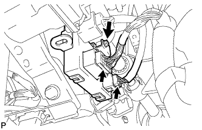

МУЛЬТИПЛЕКСНЫЙ ЭБУ РЕГУЛИРОВКИ НАКЛОНА И ТЕЛЕСКОПИЧЕСКОГО ИЗМЕНЕНИЯ ВЫСОТЫ > СНЯТИЕ |
| 1. СНИМИТЕ ПОДУШКУ БЕЗОПАСНОСТИ № 1 ДЛЯ ЗАЩИТЫ НОГ В СБОРЕ |
| 2. СНИМИТЕ МУЛЬТИПЛЕКСНЫЙ ЭБУ РЕГУЛИРОВКИ НАКЛОНА И ТЕЛЕСКОПИЧЕСКОГО ИЗМЕНЕНИЯ ВЫСОТЫ |
Освободите зажим жгута проводов.
|  |
Отсоедините 2 разъема.
Отверните болт и снимите ЭБУ.